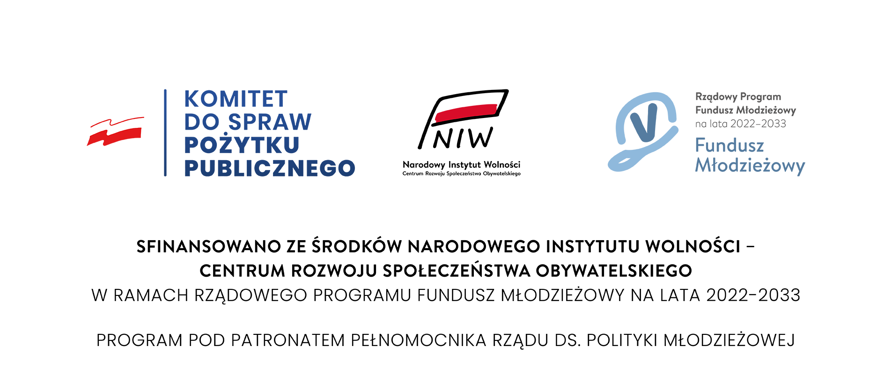

Fundusz młodzieżowy
Fundacja Zdrowe Miasto i Narodowy Instytut Wolności - CRSO, w latach 2022 - 2023 realizuje projekt angażujący i społecznie rozwijający ludzi młody pod tytułem "Akademia Młodzieży Obywatelskiej" Celem projektu jest zwiększenie udziału młodzieży w życiu społecznym powiatu białostockiego i woj. podlaskiego. Odbędzie się to poprzez realizację 3 głównych działań tj. warsztatach grupowych (70 os,), działaniach Klubu Obywatelskiego Młodzieży (zwanego we wniosku Akademią KOM, 30 os.), jak i poprzez głęboką analizę problemu na próbie 100 osób w wieku 18 – 29, na podstawie, której stworzona zostanie Biała Księga dobrych praktyk we współpracy na linii samorząd / NGO – ludzie młodzi.. W 2022 roku zrealizowaliśmy pracę z 2 grupami warsztatowymi, które miały miejsce w listopadzie i grudniu tego roku. W zajęciach brało udział 10 osób na grupę, na warsztatach poruszona została tematyka partycypacji społecznej np:
- Narzędzia konsultacji społecznej.
- Czym jest partycypacja?
- Proces, narzędzia partycypacji i jak ich używać,
- Co zniechęca do działań i partycypacji, czyli o zawiłościach, barierach i języku,
- Metody i sposoby badawcze: spacer badawczy, wywiad biały i inne sposoby,
- Dotacje i inne sposoby finansowania swoich działań,
- Jak działa urząd i w czym może mi pomóc?
- Jak czytać i pisać, czyli język urzędowy. W 2023 roku planujemy intensyfikację zajęć, jak również rozpoczęcie działania Akademii Młodzieży Obywatelskiej, która będzie zrzeszać wszystkie chętne osoby w wieku 16 - 25 lat, które chciałby dowiedzieć się, co mogą zrobić i na co mają wpływ w swojej przestrzeni lokalnej (akademia działać będzie w części biurowej Galerii Alfa w Białymstoku - siedziba FZM). Więcej szczegółów na temat projektu znajdą państwo na oficjalnej stronie projektu: https://www.facebook.com/AkademiaPASER.
Projekt sfinansowany ze środków Narodowego Instytutu Wolności - Centrum Rozwoju Społeczeństwa Obywatelskiego w ramach rządowego programu Fundusz Młodzieżowy na lata 2022 - 2033.